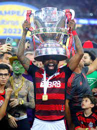
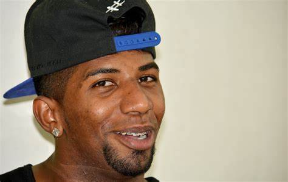

TITULOS DA CARREIRA DE RODILINDO
Avaí

- Campeonato Catarinense: 2012
- Copa Libertadores da América: 2019
- Campeonato Carioca: 2017, 2019
- Copa do Brasil: 2022
Premiações individuais

- Seleção do Campeonato Carioca: 2016[17]
- Troféu Mesa Redonda: Melhor lateral-direito do Campeonato Brasileiro de 2018
- Seleção do Campeonato Gaúcho: 2021